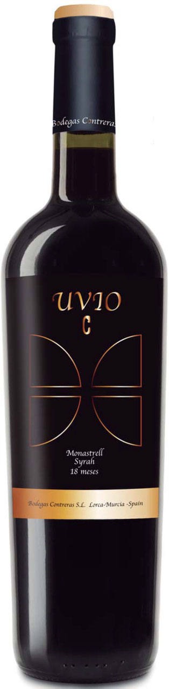

Sortius Syrah
Reserva 2018 - D.O. Rioja
€45.99
€59.99
Un vino tinto de alta gama, elaborado con uvas seleccionadas de viñedos centenarios. Su crianza en barrica de roble francés le otorga notas de vainilla y especias, con un final largo y elegante. Ideal para maridar con carnes rojas y quesos curados.
Características
- Tipo: Tinto Reserva
- Crianza: 24 meses en barrica de roble
- Variedad: Tempranillo
- Origen: D.O. Rioja
- Añada: 2018